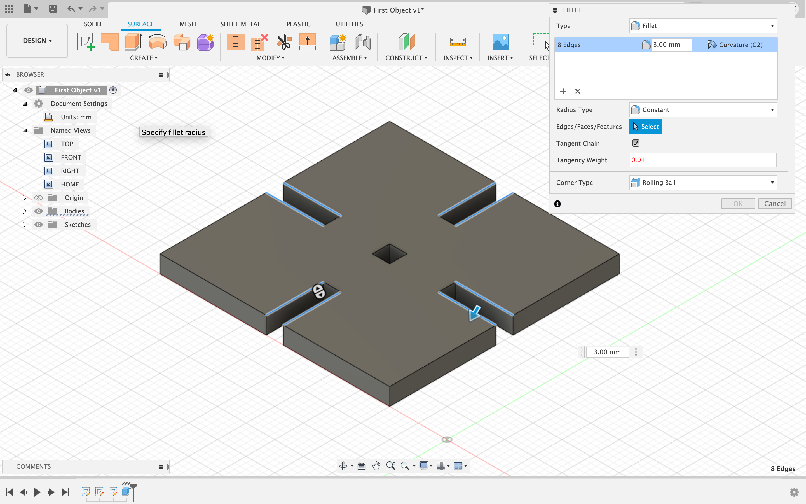
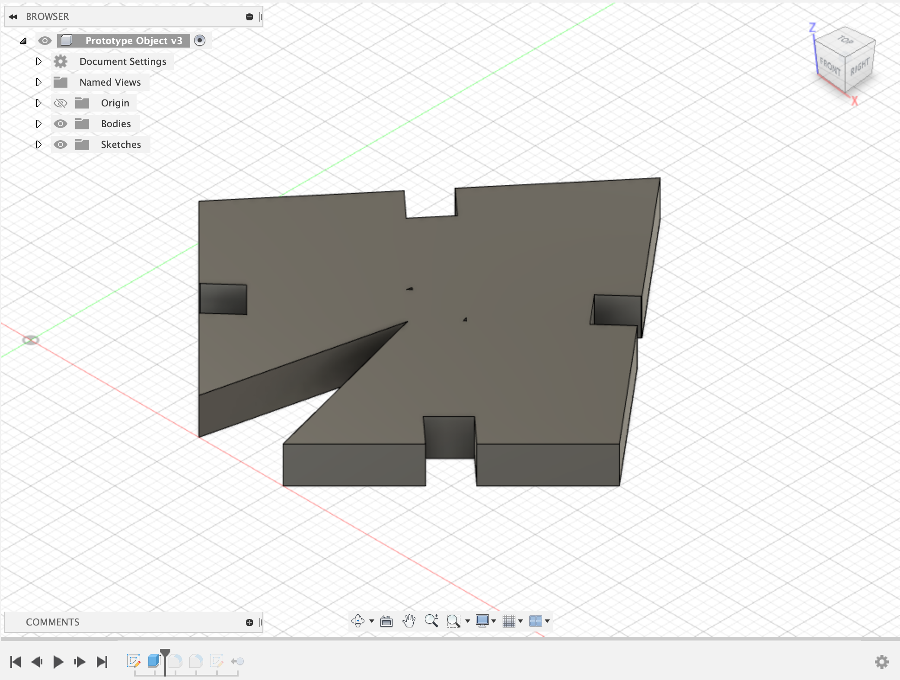
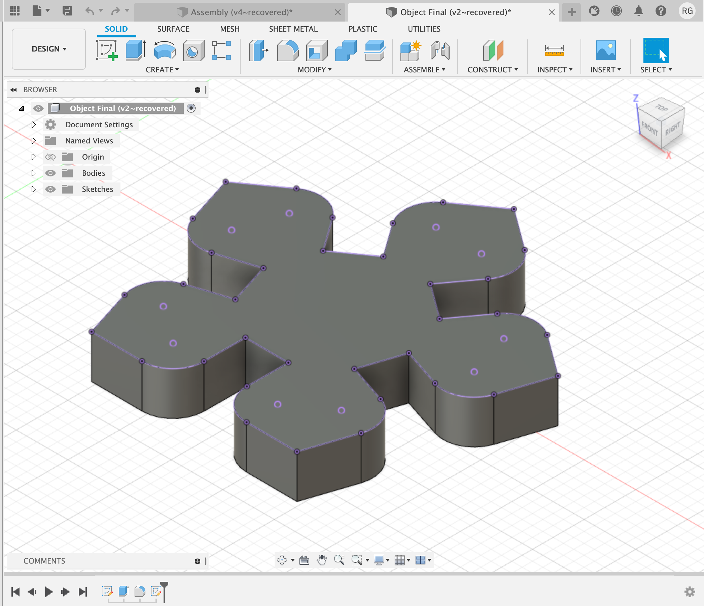

<h1 style="background-color:Tomato;">Week 2: Press-Fit</h1>
This week we were able to laser cut for the first time! If I'm going to be honest here, I struggled....like...A LOT. We had to make press-fit kits using cardboard. The idea seemed pretty easy in my mind, but then when I started to form the shape in Fusion 360, I had no idea what shape I would make and how to model it to make a bunch of them fit together. I started out with following the tutorial that was linked on the course's website. It went pretty well:

But then after that, I tried a couple of designs:

